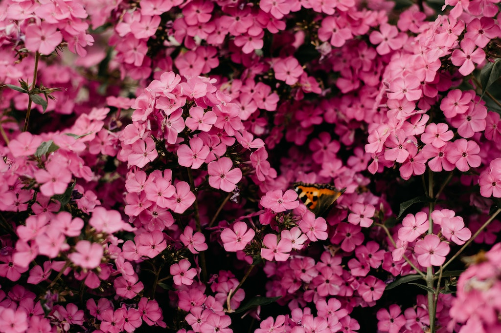

Fanes-Sennes-Braies Nature Park
Including a surface of 25,680 hectares, the Fanes-Senes-Braies nature park is one of the largest
protected areas of South Tyrol, Italy. It comprises the municipalities of Badia, Braies, Dobbiaco,
San Vigilio di Marebbe, La Ila and Valdaora.
Steve Johnson Abstract
Using the visual language of shape, form, and colour, abtract art aims to create a composition which
is independent from most modern art.

Hidden Butterfly
A butterfly can be seen resting in this bed of pink flowers. Image by Irina Iriser

Engulfed in Fireworks
This is a long exposure photograph of a man spinning a firework. This type of photography uses a
long-duration shutter speed to capture stationary elements while moving elements are blurred or
removed.

Old-School Typewriter
Typewriters were once so popular that schools would teach a class on how to use them. Now, they're a
relic of the past.
Hatley Castle
Since construction ended in 1908, Hatley Castle has been used to house military personel, students of
the Royal Roads University and also as a movie set for various hollywood films.

Chicago, Illinois
Chicago is an international hub for finance, culture, commerce, industry, education, technology,
telecommunications, and transportation..

Solo Roadtrip
An isolated journey through the mountains. Perfect for some self-reflection.

Exploration
Sometimes all you need is warmth, some food, and good company.
Ancient Structures
Building practises from the ancient world show us the advancement of early architecture.

Blades
Unknown still of a bladed pattern. Possibly a structure or a piece of engineering.

Vibrant in darkness
A fan pose from a sprightly fish. Captured with high exposure.
{kind=link}
{kind=link}
{kind=link}
{kind=link}
{kind=link}